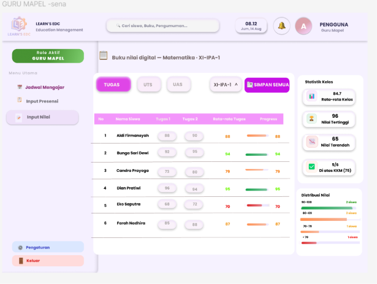
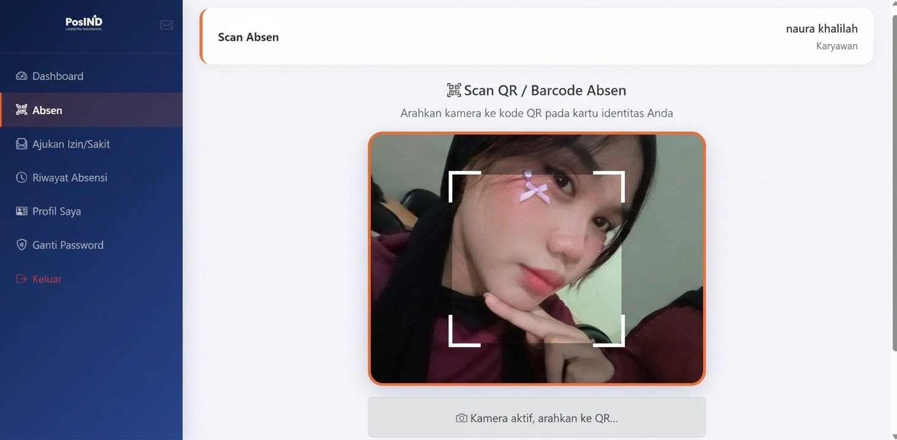
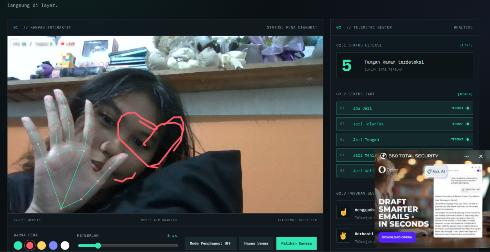

Bahasa & Web
HTMLCSSJavaScriptPHPMySQL
HALO, SENANG KENAL!
Aku siswa Rekayasa Perangkat Lunak yang tertarik dengan pengembangan website, desain antarmuka, dan teknologi kreatif. Aku senang belajar hal baru dan mengubah ide menjadi karya digital.
✦ learning, creating, and growing every day
A LITTLE INTRODUCTION
Namaku Naura Khalila Sopiyan. Aku adalah siswa jurusan Rekayasa Perangkat Lunak (RPL) yang tertarik mempelajari pengembangan website dan desain antarmuka. Aku terus berusaha mengembangkan kemampuan melalui tugas sekolah, proyek, dan pengalaman praktik.
TOOLS OF MY TRADE
Teknologi dan tools yang aku pelajari.
Membuat dan mengatur halaman website.
Menyusun tampilan yang menarik dan mudah digunakan.
Mengenal pengelolaan data dengan database.
SELECTED WORK
Beberapa karya yang pernah aku kerjakan.

WEBSITE · 01
Website pribadi untuk memperkenalkan diri, keahlian, dan hasil karya.

WEB DEVELOPMENT · 02
Website untuk membantu pencatatan dan pengelolaan data tamu.

DESAIN · 03
Rancangan tampilan aplikasi yang sederhana dan mudah dipahami.
✿ Setiap proyek adalah kesempatan untuk belajar dan berkembang.
MY LEARNING JOURNEY
PENDIDIKAN · SAAT INI
Jurusan Rekayasa Perangkat Lunak (RPL), mempelajari pengembangan perangkat lunak, desain web, dan basis data.
PRAKTIK KERJA LAPANGAN
Mendapat pengalaman dalam pengelolaan berkas arsip, pelayanan kepesertaan, pemeriksaan data peserta, dan penggunaan komputer untuk mendukung pekerjaan administrasi.
LET'S KEEP IN TOUCH
Terima kasih sudah mengunjungi portofolioku. Hubungi aku melalui tautan di bawah ini.